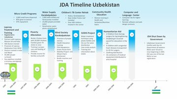

Reports
Annual reports and timeline
JDA's annual reports from 2000 to 2020, with the names of local people removed.

The JDA timeline
A 16-page illustrated chart of JDA's programs in Uzbekistan, Afghanistan and Iraqi Kurdistan, with program totals as JDA recorded them. A clickable version is on the Our Story page.
Annual reports
Newest first. Select a cover to open the report. Press releases, newsletters and program reports are on the Publications page.
About these reports. Reports for 2001 and for 2006 to 2011 were not found in JDA's archive. The file once labeled as the 2001 report is the report for 2000. To protect the people JDA served and worked with, the names of beneficiaries, local staff and individual donors, along with local phone numbers and personal email addresses, have been removed from these files. Photos are not altered: names are withheld, not faces. The files are otherwise as originally published. Financial statements and tax filings are not posted on this site.